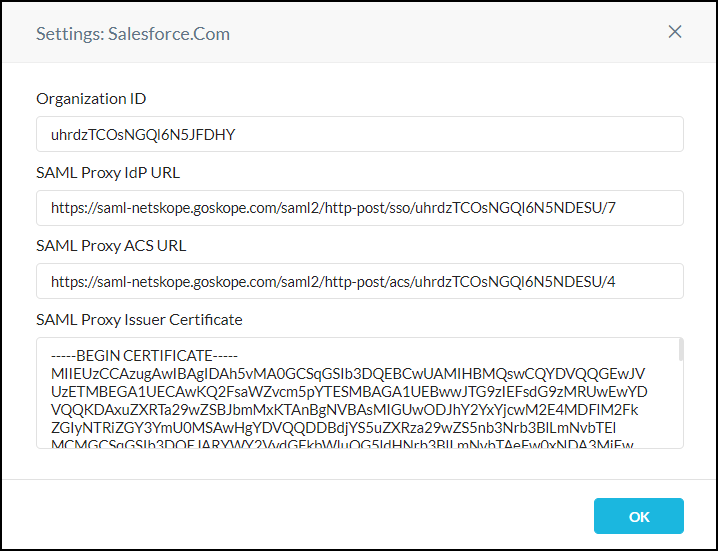

Configure the SAML Proxy in the Netskope UI
The SAML Proxy must be configured with the Assertion Consumer Service (ACS) URL, Identity Provider (IdP) URL, and IdP Certificate by following these procedures.
To configure the SAML Reverse Proxy in the Netskope UI:
Go to Settings > Security Cloud Platform > Reverse Proxy > SAML.
Click Add Account.
In the Add Account dialog, configure these parameters:
App: Select an app from the dropdown list. This is the app for which you want to set up the SAML proxy.
Name: Enter a name identifying the account.
ACS (Assertion Consumer Service) URL: Contact your SaaS app Service Provider (SP) vendor to get the SAML ACS URL and enter it in this field.
IdP (Identity Provider) URL: Contact your 3rd-party SSO IdP and add the per app unique Identity Provider Login URL in this field.
IdP (Identity Provider) Certificate: Copy and paste the PEM format certificate of the 3rd-party SSO IdP (This is required by Netskope to validate the signature of the SAML Assertion).
Alternate User ID: Netskope looks at the NameID field in the SAML Assertion to get the user identity. If you would like to use another field for user identification, then type the name of the SAML attribute in this field.
Emergency Bypass (optional): Enable this option to bypass the chosen app (above) from Netskope post authentication. When bypass is chosen, Yes appears in the Bypass column for this app on the main page.
Bypass Auth checks for Mobile (optional): Use to bypass auth checks for all mobile devices.
Match SAML Assertion Key Value Pair (optional:) Use to perform a Key/Value pattern match against the assertions the SAML/AuthProxy receives from the original IdP. Specific Block/Bypass actions are performed directly on matching authentication flows while all other authentication flows continue to be steered according to the default redirection policies.
IP Address Access (optional): Choose whether to access an IP address or just those listed below.
Client Certificate Check (optional): The certificates used to issue Client certificates must be uploaded before using the certificate check options. Copy and paste the intermediate CA first, and then the Root CA, into one file before uploading.
For Client Certificate Check, choose one of these options:
Not Required: Client certificate check is not required.
Required: Client certificate check is required for authentication to succeed. Choose one of these actions:
Block if failure
Bypass if success
Use result for device classification only.
To exclude IPs from the Client Certificate Check, enter them in the Exceptions text field.
To also exclude the Netskope Source IP address/ranges listed at the bottom of this page, enable the checkbox.
For the Block and Device Classification options, you can also choose to verify the user's email address based on the Client certificate CN.
Bypass Customer IP Address/Range (optional): Enter your IP addresses and ranges to bypass. Entries need to be in CIDR format.
Click Save. After the proxy setting have been added, click OK.
After saving the configuration, click the settings icon next to your instance name to preview your configuration.
 The Settings window provides the information you will need to complete the set up for your SSO identity provider and cloud app service provider:
Netskope Organization ID
Netskope SAML Proxy IdP URL
Netskope SAML Proxy ACS URL
Netskope SAML Proxy Issuer Certificate
After copying this information, close the Settings window.
To configure these SAML proxy options, click on the Tools icon in the top right of the page:
Enable Device Classification: Select to restrict access to cloud apps from corporate devices based on the device classifications set in the tenant UI.
Re-Sign SAML Assertions: Select to re-sign your SAML assertions.
Emergency Bypass: Select to allow all apps to pass through the SAML proxy.
Custom Block Page: Select from the dropdown list the block page to be shown when an application is blocked.
Tip
To update your CA, click the Replace link at the bottom of this window.